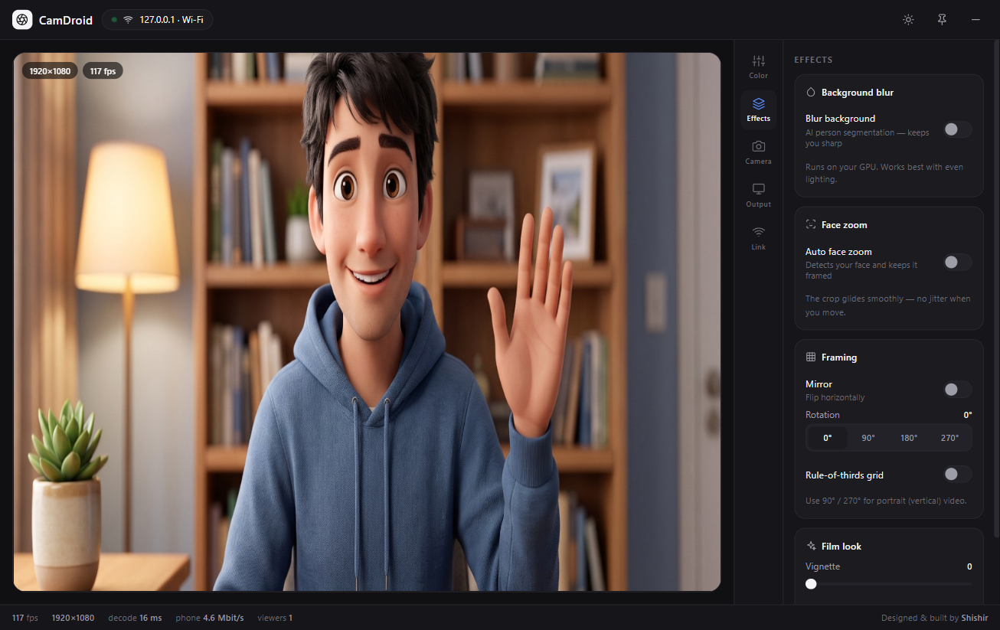
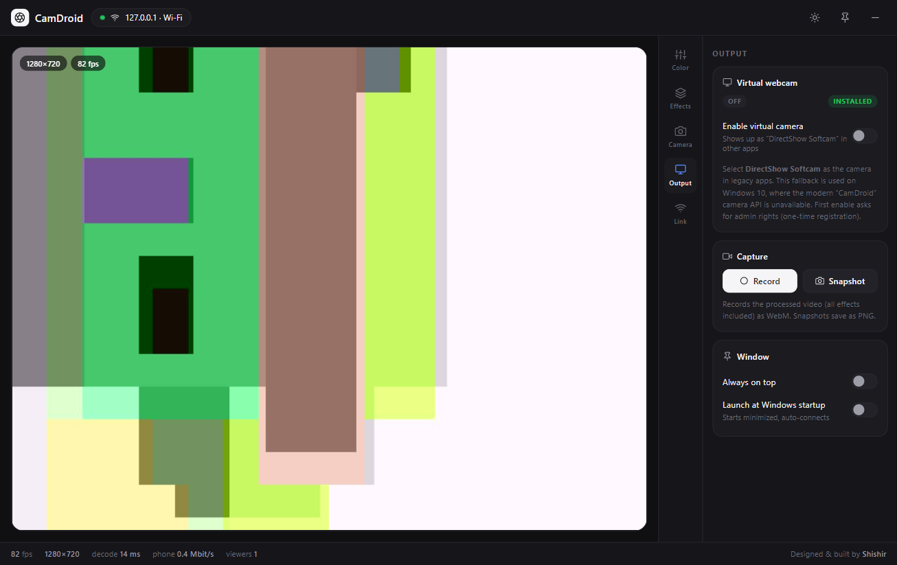
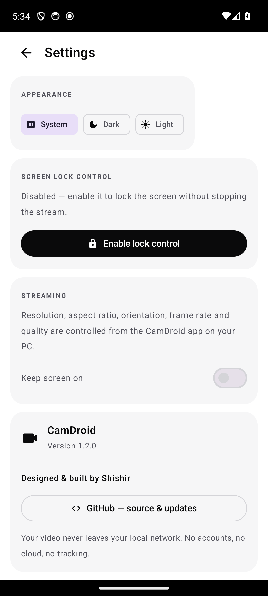

CamDroid streams every camera on your phone — ultra-wide, main, tele, front — to your PC over Wi-Fi or USB, and outputs it as a real virtual camera for Zoom, Teams, Discord, OBS and more. With a full color studio, face zoom, background blur and up-to-4K presets. No ads, no account, no paid tier.
Works as a camera in every app
A complete phone-as-webcam studio — controlled from your PC, simple on your phone.
Ultra-wide, main, telephoto and front cameras — switch lenses live, with zoom, torch, exposure and tap-to-focus.
SD, HD, Full HD, QHD and UHD/4K with 16:9 or 4:3 — matched to what your phone's camera really supports, portrait or landscape.
Exposure, brightness, contrast, highlights, shadows, temperature, tint, hue, saturation, vibrance, gamma and sharpness — with one-click presets.
Smooth automatic face tracking keeps you framed, and adjustable background blur powered by on-device MediaPipe AI.
Frame-driven virtual-camera output with Normal, Minimal and Auto latency modes. Auto steps down when the phone heats up or battery runs low.
Lock the phone for real — the camera keeps streaming via a foreground service with wake & Wi-Fi locks. Encoding pauses when nobody's watching.
mDNS discovery finds your phone automatically on Wi-Fi; plug in USB and it connects by itself. Manual IP always available.
Windows 11 native Media Foundation camera named “CamDroid”, plus a DirectShow fallback for Windows 10 and legacy apps. Keeps running in the tray.
Your video never leaves your local network or the USB cable. No accounts, no cloud, no analytics, no tracking.
From download to appearing as a camera in Zoom — in about a minute.
Run the Windows installer and install the APK on your Android phone (Android 9+). Both are on the Releases page.
Same Wi-Fi? They find each other automatically. Or plug in USB with debugging enabled — or type the phone's IP. The phone shows a QR code and live status.
Enable the virtual camera in the Output tab (one-time admin approval on Windows 11), then choose CamDroid as the camera in any app.
Real captures from the Windows studio and the Android app.



Looking for a way to use your phone as a webcam without paying for HD, extra cameras or effects? CamDroid is a free, open-source alternative to DroidCam, Iriun Webcam, Camo and IVCam — with no ads, no account and no paid tier. Every feature is included: 4K presets, all lenses, face zoom, background blur, the full color studio, recording and screen-off streaming.
Because it's open source (MIT), you can inspect exactly what it does — and your video stays on your own network.
Free forever. Windows 10/11 (x64) and Android 9.0+.
Checksums (SHA256SUMS.txt), release notes and source code on GitHub Releases · View source
People find CamDroid by searching